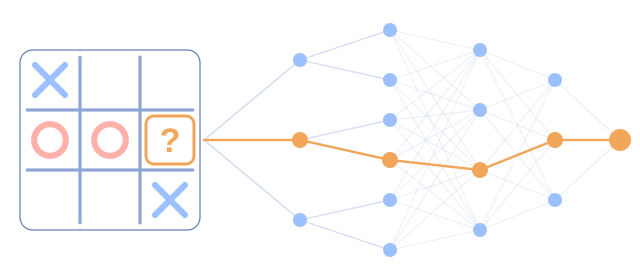

Учебен сайт за 10. клас
Как компютрите се научиха да играят
От Deep Blue до AlphaStar — и какво следва.
Започни →

I
Да мислиш напред
1
Може ли машина да ни изненада?
2
Правилата не са стратегия
3
Deep Blue срещу Каспаров
4
Колко са партиите?
5
Как компютърът мисли напред
II
Да се учиш от грешките
6
Откъде машината знае, че греши?
7
Персептронът
8
От персептрона до днес
9
AlexNet
10
Какво „вижда“ мрежата?
11
Atari: учене от точки
12
DQN отблизо
13
Наградата е компас
14
Машината гони наградата
III
Да играеш срещу себе си
15
Защо Го?
16
AlphaGo срещу Лий Седол
17
Ход №37
18
Ход №78
19
MCTS: разузнавачите
20
Случайни партии
21
Интуиция и проверка
22
AlphaZero
23
AlphaStar
IV
Отвъд игрите
24
Как ChatGPT пише отговор
25
Думите като числа
26
Кой „ключ“? Внимание
27
Отвъд игрите
28
Финална викторина
Изчисти отговорите